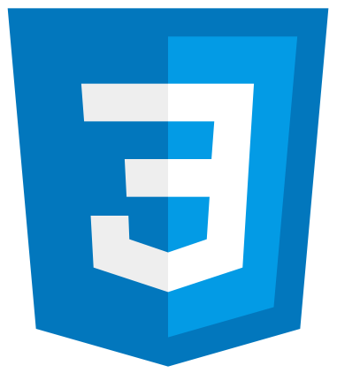
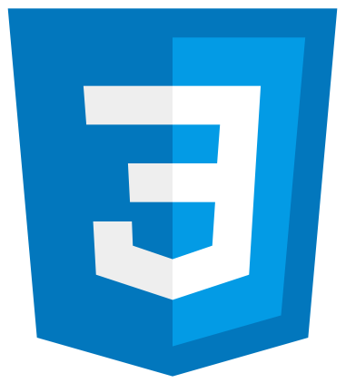

About Me
Greetings! My name is Rafael Cardenas, and I am an engineer with a variety of areas of expertise and skills. With my experience in industrial engineering, auditing, and software development,
I have a bachelor's degree with an Industrial Engineering major, and am also self taught in Computer Science and Web Development, having completed both programs.
My work ethic is based on practicality and efficiency. I believe that technology, combined with human creativity and a desire to always keep learning, can create a simple and effective solution for any kind of problem.
On the personal side, I am interested in PC building and gaming, music, cooking, science fiction and fantasy. Also, I would never refuse a game of Settlers of Catan.

Projects
The first computer program

The world's first computer program for computing Bernoulli numbers.
The Analytical Engine

I helped Charles Babbage on topics ranging from math to computation that helped the development of the Analytical Engine.
The Ada programming language

My work inspired the United States Department of Defense to name their new programming language after me.
Skills
 
